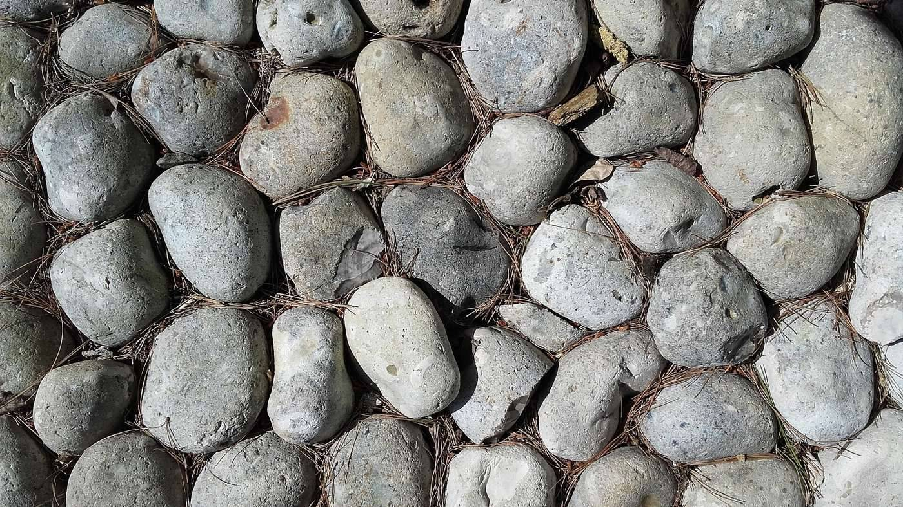

店のこと
EZOKAFFEについて


写真はフリー素材のイメージです。お店や所在地を写したものではありません。
ご紹介
いまお伝えできること
EZOKAFFEは、旭川市東光にあるカフェです。確認できているのは所在地とInstagramのアカウントのみで、お店の考えや歩み、提供内容などは準備中です。ご本人からお聞きしたことをここに載せる予定の、サンプルページです。
このサイトの「爪とぎの部位」の図は、制作側の連想によるものです。お店の理念・由来とは無関係で、お店が提供するものを示すものでもありません。
部位の解説
図の六つの部位
- 1天板支柱の上にのせる、平らな板。上に乗るための台になる部分。
- 2麻縄の巻き支柱のまわりに隙間なく巻きつけた、ざらりとした縄の面。
- 3支柱縄の内側にある芯の柱。この図では一部の縄を外して見せています。
- 4吊りボールひもで下げた小さな球。揺れて動く部分。
- 5ベース板いちばん下で全体を支える、広くて重い土台の板。
- 6ゴム足ベース板の裏につける、すべり止めの小さな脚。



質感のイメージです。写真はお店のものではありません。